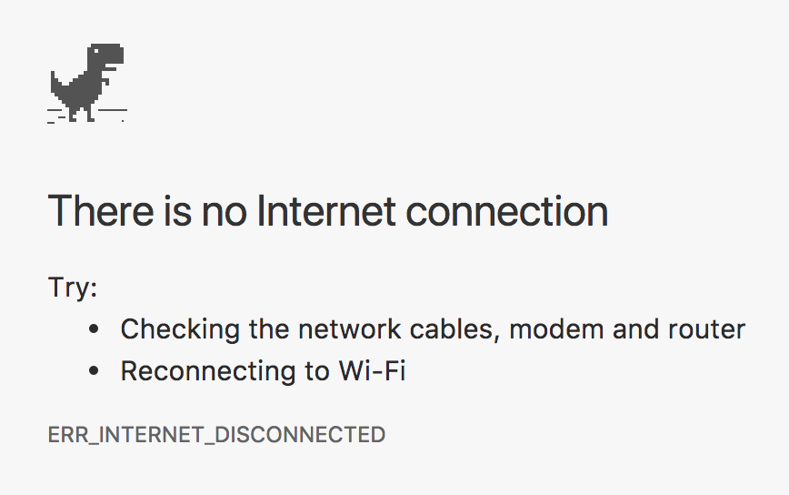
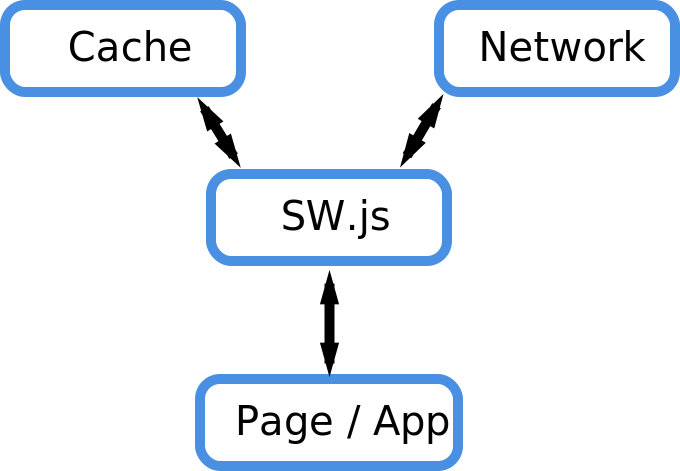

Hands-on Offline First! with Hoodie
🙌
Markus Dobmann


What actually is offline?
1. Offline as in "offline"
2. Offline as in "only very very slow connection"
3. Offline as in "no stable connection"
🚂🚃offline🚃online🚃offline🚃online
4. Offline as in "pretend there would be a connection (but there isn't)"

A note about Progressive Enhancement
"To get our minds in an Offline First state, we need to assume that a user will not have connectivity, and design the experience around that. Then, if we detect that a user connects to the internet, we can add features that take advantage of that and prepare us for the next time we go offline." - Nick Kasten
How to prevent this
"offline"?
We have the technologies to do so.
- ServiceWorker to cache our application files
- PouchDB to store data offline
Service Worker
What's in a ServiceWorker?
Browser Support lookin' good

Feels like cheating
$ npm i -g create-react-app
$ create-react-app awesome-application
Cache all our application files by default

- Uses PouchDB to store data
- Provides convenient API to do so
How to store data with Hoodie?
const hoodie = new Hoodie({ /* ... */ })
const apple = { type: 'apple', image: '...' }
const banana = { type: 'banana', image: '...' }
hoodie.store.add([apple, banana]) // => Promise
hoodie.store.remove(apple) // => Promise
// add, update or remove events
hoodie.store.on('change', renderItems)
Ok, but.. how does Hoodie actually work?

Demo 👨🏻💻
Store data offline with Hoodie
Synchronisation
How does Hoodie do sync?

Demo 👨🏻💻
Sync
Things to consider
- Security 🔐
- Share data between users 🤝
- User interaction 🤷🏽♀️
There's still loads of work to do...
Community
There is a huge Offline First! community. Join us!
- Twitter: @OfflineCamp
- Slack: offlinefirst.org/chat
- Camp: offlinefirst.org/camp
- Medium: medium.com/offline-camp
Offline Camp Berlin 2017

Questions?
Thank you for having me!
👋